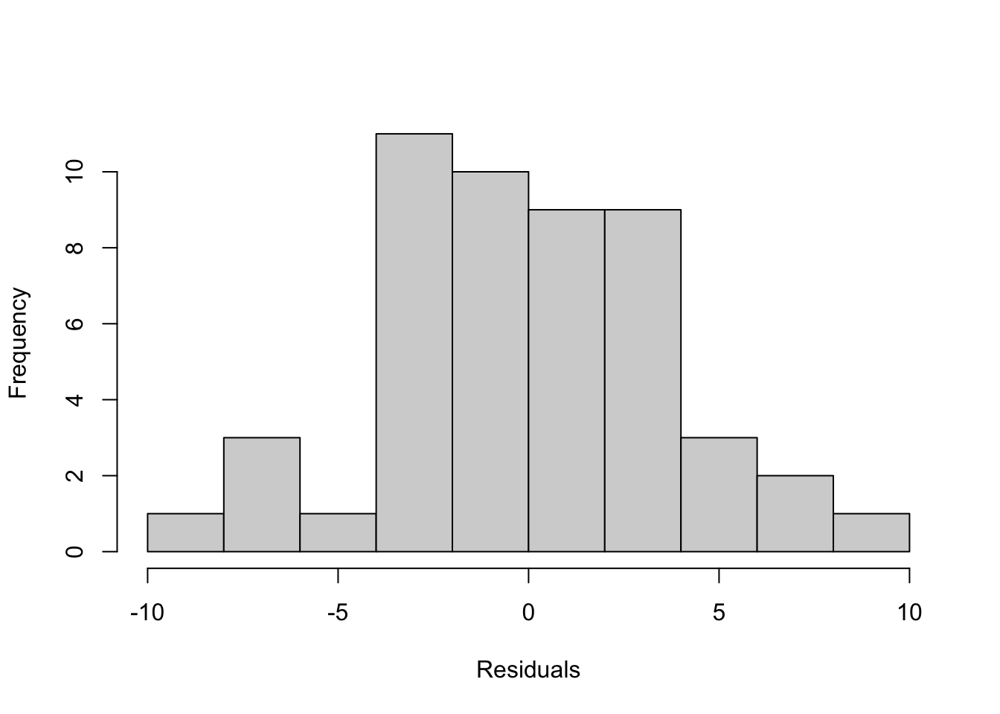

# List of packages required:
packages <- c("tidyverse", "PNWColors", "janitor", "faraway", "broom", "DHARMa", "emmeans", "performance", "ellipse")
# Load packages into session
lapply(packages, require, character.only = TRUE)
rm(packages)
# Ensure functions with duplicate names are from the correct package
select <- dplyr::select
map <- purrr::map
summarize <- dplyr::summarize
clean_names <- janitor::clean_names
margin <- ggplot2::margin
set.seed(123) #Set seed for pseudo-random number generator, for reproducibility
mytheme <- theme_light()+ #define custom theme for ggplots
theme(axis.title.y = element_text(margin = margin(t = 0, r = 10, l = 0)),
axis.title.x = element_text(margin = margin(t = 10, l = 0)),
text=element_text(size=15))
data("gala")Inference & Diagnostics
Chapter 3: Inference
Consider a larger model \(\Omega\) with \(p\) parameters and a smaller model \(\omega\) that consists of a subset of \(q\) predictors from the \(p\) predictors that are in \(\Omega\). The F-statistic used in a hypothesis test comparing the two models is:
\[F = \frac{\left(RSS_\omega -RSS_\Omega\right)/(p-q)}{RSS_\Omega/(n-p)} \]
Overall F-test compares to null model: Are any of the predictors useful in predicting the response? Let the full model \((\Omega)\) be \(y = X \beta + \varepsilon\) where \(X\) is a full-rank $ n p$ matrix and the reduced model \((\omega)\) be \(y = \mu + \varepsilon\). We estimate \(\mu\) by \(\bar{y}\). We write the null hypothesis as: \[H_0: \beta_1 = \ldots\beta_{p-1}=0 \] RSS for the full model: \[RSS_\Omega=\left(y-X\hat{\beta} \right)^T\left(y-X\hat{\beta} \right) =\hat{\varepsilon}^T\hat{\varepsilon}\] RSS for the smaller model, in this case called TSS, the total sum of squares corrected for the mean \[TSS=\left(y-\bar{y} \right)^T\left(y-\bar{y}\right) \] The F-statistic is then \[\frac{(TSS-RSS_\Omega)/(p-1)}{RSS_\Omega/(n-p)}\]
Examples
data("gala")
lmod <- lm(Species ~ Area + Elevation + Nearest + Scruz + Adjacent, gala)
nullmod <- lm(Species ~ 1, gala)
anova(lmod, nullmod)| Res.Df | RSS | Df | Sum of Sq | F | Pr(>F) |
|---|---|---|---|---|---|
| 24 | 89231.37 | NA | NA | NA | NA |
| 29 | 381081.37 | -5 | -291850 | 15.69941 | 7e-07 |
We can compute this by hand:
rss0 <- deviance(nullmod)
rss <- deviance(lmod)
df0 <- df.residual(nullmod)
df <- df.residual(lmod)
fstat <- ((rss-rss0)/(df-df0))/(rss/df)
1-pf(fstat, df0-df, df)[1] 6.837893e-07Testing 1 predictor
lmods <- lm(Species ~ Elevation + Nearest + Scruz + Adjacent, gala)
anova(lmods, lmod)| Res.Df | RSS | Df | Sum of Sq | F | Pr(>F) |
|---|---|---|---|---|---|
| 25 | 93469.08 | NA | NA | NA | NA |
| 24 | 89231.37 | 1 | 4237.718 | 1.139792 | 0.296318 |
sumary(lmod) Estimate Std. Error t value Pr(>|t|)
(Intercept) 7.068221 19.154198 0.3690 0.7153508
Area -0.023938 0.022422 -1.0676 0.2963180
Elevation 0.319465 0.053663 5.9532 3.823e-06
Nearest 0.009144 1.054136 0.0087 0.9931506
Scruz -0.240524 0.215402 -1.1166 0.2752082
Adjacent -0.074805 0.017700 -4.2262 0.0002971
n = 30, p = 6, Residual SE = 60.97519, R-Squared = 0.77sumary(lm(Species ~ Area, gala)) Estimate Std. Error t value Pr(>|t|)
(Intercept) 63.782861 17.524416 3.6397 0.0010943
Area 0.081963 0.019713 4.1578 0.0002748
n = 30, p = 2, Residual SE = 91.73159, R-Squared = 0.38Testing a pair of predictors
lmods <- lm(Species ~ Elevation + Nearest + Scruz, gala)
anova(lmods, lmod)| Res.Df | RSS | Df | Sum of Sq | F | Pr(>F) |
|---|---|---|---|---|---|
| 26 | 158291.63 | NA | NA | NA | NA |
| 24 | 89231.37 | 2 | 69060.26 | 9.287352 | 0.0010297 |
Testing a subspace
\[H_0:\beta_\text{Area}= \beta_\text{Adjacent}\]
lmods <- lm(Species ~ I(Area+Adjacent) + Elevation + Nearest + Scruz, gala)
anova(lmods, lmod)| Res.Df | RSS | Df | Sum of Sq | F | Pr(>F) |
|---|---|---|---|---|---|
| 25 | 109591.12 | NA | NA | NA | NA |
| 24 | 89231.37 | 1 | 20359.75 | 5.476035 | 0.0279256 |
\[H_0:\beta_\text{Elevation}= 0.5\]
lmods <- lm(Species ~ Area+ offset(0.5*Elevation) + Nearest + Scruz + Adjacent, gala)
anova(lmods, lmod)| Res.Df | RSS | Df | Sum of Sq | F | Pr(>F) |
|---|---|---|---|---|---|
| 25 | 131312.12 | NA | NA | NA | NA |
| 24 | 89231.37 | 1 | 42080.76 | 11.3182 | 0.0025738 |
A simpler way to test such point hypotheses is to use a t-statistic: \[t = (\hat{\beta}−c)/\text{se}(\hat{\beta})\] where \(c\) is the point hypothesis. In this example, the statistic and corresponding p-value are:
b_hat <- unname(lmod$coefficients["Elevation"])
se_b_hat <- summary(lmod)$coef["Elevation", "Std. Error"]
(tstat <- (b_hat-0.5)/se_b_hat)[1] -3.3642532*pt(tstat, 24)[1] 0.002573836tstat^2[1] 11.3182Permutation Tests
Overall model
lmod <- lm(Species ~ Nearest + Scruz, gala)
lms <- summary(lmod)
lms$fstatistic value numdf dendf
0.6019558 2.0000000 27.0000000 pf(lms$fstatistic[1],lms$fstatistic[2],lms$fstatistic[3],lower.tail=F) value
0.5549255 set.seed(123)
nreps <- 4000
fstats <- numeric(nreps)
for(i in 1:nreps){
lmods <- lm(sample(Species) ~ Nearest+Scruz , gala)
fstats[i] <- summary(lmods)$fstat[1]
}
mean(fstats > lms$fstat[1])[1] 0.55825Single predictor
summary(lmod)$coef[3,] Estimate Std. Error t value Pr(>|t|)
-0.4406401 0.4025312 -1.0946731 0.2833295 tstats <- numeric(nreps)
set.seed(123)
for(i in 1:nreps){
lmods <- lm(Species ~ Nearest+sample(Scruz), gala)
tstats[i] <- summary(lmods)$coef[3,3]
}
mean(abs(tstats) > abs(lms$coef[3,3]))[1] 0.26825Confidence Intervals
Single parameter
\[\hat{\beta_i}\pm t^{(\alpha/2)}_{n-p}\text{se}(\hat{\beta}) \]
lmod <- lm(Species ~ Area + Elevation + Nearest + Scruz + Adjacent, gala)
sumary(lmod) Estimate Std. Error t value Pr(>|t|)
(Intercept) 7.068221 19.154198 0.3690 0.7153508
Area -0.023938 0.022422 -1.0676 0.2963180
Elevation 0.319465 0.053663 5.9532 3.823e-06
Nearest 0.009144 1.054136 0.0087 0.9931506
Scruz -0.240524 0.215402 -1.1166 0.2752082
Adjacent -0.074805 0.017700 -4.2262 0.0002971
n = 30, p = 6, Residual SE = 60.97519, R-Squared = 0.77We can construct individual 95% CIs for \(\beta_\text{Area}\) for which we need the 2.5% and 97.5% percentiles of the t-distribution with 30−6 = 24 degrees of freedom.
(t_stat<-qt(0.975, 30-6))[1] 2.063899b_hat <- summary(lmod)$coefficients["Area", "Estimate"]
se_b_hat <- summary(lmod)$coefficients["Area", "Std. Error"]
b_hat + c(-1, 1)*t_stat*se_b_hat[1] -0.07021580 0.02233912confint(lmod, "Area") 2.5 % 97.5 %
Area -0.0702158 0.02233912Multiple parameters
If you are interested in more than one parameter, you can construct a \(100(1−\alpha)\)% confidence region for \(\beta\) using: \[\left(\hat{\beta}-\beta \right)^TX^TX\left(\hat{\beta}-\beta \right) \leq p \hat{\sigma}^2 F^{(\alpha)}_{p, n-p} \] These regions are ellipsoidally shaped. Because these ellipsoids lie in higher dimensions, they cannot easily be visualized except for the two-dimensional case. Let’s see how these compare to the univariate confidence intervals. For example, we can construct the joint 95% confidence region for \(\beta_\text{Area}\) and \(\beta_\text{Adjacent}\). We have added the point of the least squares estimates which lies at the center of the ellipse and the univariate confidence intervals for both dimensions as dotted lines:
Using base R:
plot(ellipse(lmod,c(2,6)),type="l",ylim=c(-0.13,0), xlim = c(-0.09, 0.04))
points(coef(lmod)[2], coef(lmod)[6], pch=19)
abline(v=confint(lmod)[2,],lty=2)
abline(h=confint(lmod)[6,],lty=2)A ggplot version:
# ggplot version
data.frame(ellipse(lmod,c(2,6))) %>%
ggplot(aes(x=Area, y=Adjacent))+
# geom_point()+
geom_density_2d(stat="identity", color="black")+
lims(y=c(-0.13,0), x=c(-0.09, 0.04))+
geom_vline(xintercept = confint(lmod)[2,],lty=2)+
geom_hline(yintercept = confint(lmod)[6,],lty=2)+
annotate(geom="point", x=coef(lmod)[2], y=coef(lmod)[6])+
mytheme+
theme(panel.grid = element_blank())We can determine the outcome of various hypotheses from the plot. The joint hypothesis \(H_0 : \beta_\text{Area} = \beta_\text{Adjacent} = 0\) is rejected because the origin does not lie inside the ellipse. The hypothesis \(H_0 : \beta_\text{Area} = 0\) is not rejected because zero does lie within the vertical dashed lines, whereas the horizontal dashed lines do not encompass zero and so \(H_0: \beta_\text{Adjacent} = 0\) is rejected.
Bootstrap Confidence Intervals
set.seed(123)
nb <- 4000
coefmat <- matrix(NA,nb,6)
resids <- residuals(lmod)
preds <- fitted(lmod)
for(i in 1:nb){
boot <- preds + sample(resids , rep=TRUE)
bmod <- update(lmod , boot ~ .)
coefmat[i,] <- coef(bmod)
}
colnames(coefmat) <- c("Intercept",colnames(gala[,3:7]))
coefmat <- data.frame(coefmat)
apply(coefmat,2,function(x) quantile(x,c(0.025,0.975))) Intercept Area Elevation Nearest Scruz Adjacent
2.5% -25.31406 -0.06236506 0.2310989 -1.716588 -0.6061978 -0.10545278
97.5% 42.69309 0.01807403 0.4207570 2.122722 0.1677720 -0.03979658Chapter 4: Prediction
Given a new set of predictors, \(x_0\), the predicted response is \[\hat{y_0}=x_0^T \hat{\beta}\]
CIs for predictions
There are two kinds of predictions made from regression models. One is a predicted mean response and the other is a prediction of a future observation. For example, suppose we have built a regression model that predicts the rental price of houses in a given area based on predictors such as the number of bedrooms and closeness to a major highway. There are two kinds of predictions that can be made for a given \(x_0\):
Suppose a specific house comes on the market with characteristics \(x_0\). Its rental price will be \(x_0^T \beta +\varepsilon\). Since \(E(\varepsilon)=0\), the predicted price is \(x_0^T \hat{\beta}\), but in assessing the variance of this prediction, we must include the variance of \(\varepsilon\).
Suppose we ask the question — “What would a house with characteristics \(x_0\) rent for on average?” This selling price is \(x_0^T \beta\) and is again predicted by \(x_0^T \hat{\beta}\), but now only the variance in \(\hat{\beta}\) needs to be taken into account.
Most times, we will want the first case, which is called “prediction of a future value,” while the second case, called “prediction of the mean response” is less commonly required. We have:
\[\text{var}(x_0^T \hat{\beta})= x_0^T (X^TX)^{-1}x_0\sigma^2\]
We assume that the future \(\varepsilon\) is independent of \(\hat{\beta}\). So a \(100(1-\alpha)\)% CI for a single future response is
\[\hat{y_0}\pm t^{(\alpha/2)}_{n-p}\hat{\sigma}\sqrt{1+x_0^T(X^TX)^{-1}x_0}\]
There is a conceptual difference here because previous confidence intervals have been for parameters. Parameters are considered to be fixed but unknown — they are not random under the Frequentist approach we are using here. However, a future observation is a random variable. For this reason, it is better to call this a prediction interval. We are saying there is a 95% chance that the future value falls within this interval whereas it would be incorrect to say that for a parameter.
Example
data(fat,package="faraway")
lmod <- lm(brozek ~ age + weight + height + neck + chest + abdom + hip + thigh + knee + ankle + biceps + forearm + wrist, data=fat)
x <- model.matrix(lmod)
(x0 <- apply(x,2,median))(Intercept) age weight height neck chest
1.00 43.00 176.50 70.00 38.00 99.65
abdom hip thigh knee ankle biceps
90.95 99.30 59.00 38.50 22.80 32.05
forearm wrist
28.70 18.30 (y0 <- sum(x0*coef(lmod)))[1] 17.49322predict(lmod,new=data.frame(t(x0))) 1
17.49322 predict(lmod,new=data.frame(t(x0)),interval="prediction") fit lwr upr
1 17.49322 9.61783 25.36861predict(lmod,new=data.frame(t(x0)),interval="confidence") fit lwr upr
1 17.49322 16.94426 18.04219Skipping autoregression section b/c would use explicit ARIMA model or other method of time-series analysis where appropriate
Chaption 6: Diagnostics
The estimation of and inference from the regression model depend on several assumptions. These assumptions should be checked using regression diagnostics before using the model in earnest. We divide the potential problems into three categories:
- Error: We have assumed that \(\varepsilon \sim N(0,\sigma^2I)\) or in words, that the errors are independent, have equal variance and are normally distributed.
- Model: We have assumed that the structural part of the model, \(E(y) = X\beta\), is correct.
- Unusual observations: Sometimes just a few observations do not fit the model. These few observations might change the choice and fit of the model.
Checking Error Assumptions
We wish to check the independence, constant variance and normality of the errors, \(\varepsilon\). The errors are not observable, but we can examine the residuals, \(\hat{\varepsilon}\). These are not interchangeable with the error, as they have somewhat different properties. Recall that \(\hat{y}=X(X^TX)^{-1}Xy=Hy\), where \(H\) is the hat matrix, so that \[\hat{\varepsilon}=y-\hat{y}=(I-H)y=(I-H)X\beta+(I-H)\varepsilon=(I-H)\varepsilon \]
Therefore, \(\text{var}\hat{\varepsilon} = \text{var} (I-H)\varepsilon = (I-H)\sigma^2\) assuming that \(\text{var}\varepsilon= \sigma^2I\). We see that although the errors may have equal variance and be uncorrelated, the residuals do not.
Constant Variance
Is the variance in the residuals related to some other quantity?
The most useful diagnostic is a plot of \(\hat{\varepsilon}\) against \(\hat{y}\). If all is well, you should see constant symmetrical variation (homoscedasticity) in the vertical (\(\hat{\varepsilon}\)) direction. Nonlinearity in the structural part of the model can also be detected in this plot.
6.1.2 - Normality
lmod <- lm(sr ~ pop15+pop75+dpi+ddpi,savings)
qqnorm(residuals(lmod),ylab="Residuals",main="")
qqline(residuals(lmod))hist(residuals(lmod),xlab="Residuals",main="")
shapiro.test(residuals(lmod))
Shapiro-Wilk normality test
data: residuals(lmod)
W = 0.98698, p-value = 0.85246.2 - Unusual Observations
- Outliers: observations that do not fit the model well
- Influential observations: observations that change the fit of the model in a substantive manner
- A leverage point is extreme in the predictor space. It has the potential to influence the fit, but does not necessarily do so.
6.2.1 - Leverages
Leverages \(h_i\) are useful diagnostics that depend only on \(X\) and not \(y\).
Wikipedia definition that I found helpful
The leverage score for the \({i}^{th}\) observation \(\mathbf{x}_i\) is given as \[h_{ii}=[H] _{ii}=x_i^\top (X^\top X)^{-1} x_i,\] the \({i}^{th}\) diagonal element of the hat (projection) matrix, \(H=X (X^\top X)^{-1} X^\top\)
Thus the \({i}^{th}\) leverage score can be viewed as the ‘weighted’ distance between \(x_i\) to the mean of \(x_i\)’s. Leverage is closely related to the squared Mahalanobis distance: \[D^2(x_i)=(x_i-\bar{x})^\top S^{-1}(x_i-\bar{x})\] where \(S=X^\top X\) is the estimated covariance matrix of \(x_i\)’s.
It can also be interpreted as the degree by which the \({i}^{th}\) measured (dependent) value (i.e., \(y_i\) influences the \({i}^{th}\) fitted (predicted) value (i.e., \(\hat{y_i}\): mathematically,
\[h_{ii}=\frac{\partial\hat{y_i}}{\partial y_i} \]
Properties of $h_{ii} - \(0 \leq h_{ii} \leq 1\) - Fixed \(i: \sum^n_{j=1} h_{ij}=1\) - \(\bar{h}=\sum^n_{i=1}h_{ii}/n=p/n\) - Fixed \(i: h_{ii}=\sum^n_{j=1} h_{ij}^2\)
\[\text{Var}(\hat{e}_i)=\sigma^2(1-h_i) \]
Large \(h_i\) lead to small variances of \(e_i\) and hence \(\hat{y_i}\) tends to \(y_i\).
Traditionally, a leverage point is one that satisfies \(h_{ii} \geq 2\bar{h} = \frac{2p}{n}\)
lmod <- lm(sr ~ pop15 + pop75 + dpi + ddpi, savings)
hatv <- hatvalues(lmod)
head(hatv) Australia Austria Belgium Bolivia Brazil Canada
0.06771343 0.12038393 0.08748248 0.08947114 0.06955944 0.15840239 sum(hatv)[1] 5## threshold value for h_i ~= 0.2
thv <- 2 * (length(coefficients(lmod)) / length(hatv))
## are any h_i > Eh?
hatv > thv Australia Austria Belgium Bolivia Brazil
FALSE FALSE FALSE FALSE FALSE
Canada Chile China Colombia Costa Rica
FALSE FALSE FALSE FALSE FALSE
Denmark Ecuador Finland France Germany
FALSE FALSE FALSE FALSE FALSE
Greece Guatamala Honduras Iceland India
FALSE FALSE FALSE FALSE FALSE
Ireland Italy Japan Korea Luxembourg
TRUE FALSE TRUE FALSE FALSE
Malta Norway Netherlands New Zealand Nicaragua
FALSE FALSE FALSE FALSE FALSE
Panama Paraguay Peru Philippines Portugal
FALSE FALSE FALSE FALSE FALSE
South Africa South Rhodesia Spain Sweden Switzerland
FALSE FALSE FALSE FALSE FALSE
Turkey Tunisia United Kingdom United States Venezuela
FALSE FALSE FALSE TRUE FALSE
Zambia Jamaica Uruguay Libya Malaysia
FALSE FALSE FALSE TRUE FALSE hatv[hatv>thv] Ireland Japan United States Libya
0.2122363 0.2233099 0.3336880 0.5314568 We verify that the sum of the leverages is indeed 5 — the number of parameters in the model.
We can also identify high leverages using half-normal plots, where the data are plotted against positive normal quantiles. We do not usually expect a straight line relationship since we do not necessarily expect a positive normal distribution for quantities like leverages. We are looking for outliers, which will be apparent as points that diverge substantially from the rest of the data
countries <- row.names(savings)
halfnorm(hatv,labs=countries,ylab="Leverages")Standardized residuals
We can use the leverages to scale the residuals so their variance is 1 \[r_i=\frac{\hat{e_i}}{\sigma \sqrt{1-h_i}} \]
Doing so allows for easy examination via \(Q-Q\) plots, as values should lie on the 1:1 line.
Studentized residuals
One way to detect outliers is to estimate \(n\) different models where we exclude one data point from each model. \[\hat{y}_{(i)}=X_{(i)}\hat{\beta}_{(i)}\] where \((i)\) indicates that the \(i^{th}\) datum has been omitted. If \(y_i-\hat{y}_{(i)}\) is large, then observation \(i\) is an outlier. To judge the size of a potential outlier, we need an appropriate scaling. We find \[\widehat{\text{var}}(y_i-\hat{y}_{(i)})=\hat{\sigma}_{(i)}^2 (1+X_{i} (X_{(i)}^\top X_{(i)})^{-1}X_i) \]
So we can compute the studentized residuals as \[t_i = \frac{y_i-\hat{y}_{(i)}}{\hat{\sigma}_{(i)}\sqrt{1+X_{i} (X_{(i)}^\top X_{(i)})^{-1}X_i}} \]
which are distributed as a \(t\)-distribution with \(n-p-1\) df. Fortunately, there is an easier way to compute \(t_i\) that avoids doing \(n\) regressions: \[t_i=\frac{\hat{e_i}}{\hat{\sigma}_{(i)} \sqrt{1-h_i}}= r_i \left(\frac{n-p-1}{n-p-r_i^2} \right)^{1/2} \]
stud <- rstudent(lmod)
stud[which.max(abs(stud))] Zambia
2.853558 df <- df.residual(lmod)-1
qt(p=.05/(length(countries)*2), df=df) #find test statistic, which is greater than the absolute value of the studentized residual[1] -3.5258012*pt((unname(-stud[which.max(abs(stud))])), df=df, lower.tail = TRUE) #p-value[1] 0.0065666632*pt((unname(-stud[which.max(abs(stud))])), df=df, lower.tail = TRUE)*nrow(savings) #corrected[1] 0.3283332car::outlierTest(lmod) #easierNo Studentized residuals with Bonferroni p < 0.05
Largest |rstudent|:
rstudent unadjusted p-value Bonferroni p
Zambia 2.853558 0.0065667 0.328336.2.3 Influential Observations
An influential point is one whose removal from the dataset would cause a large change in the fit. An influential point may or may not be an outlier and may or may not have large leverage, but it will tend to have at least one of these two properties.
Cook’s D: \[D_i=\frac{e_i^2}{p} \left(\frac{h_i}{1-h_i} \right) \]
This metric combines the residual effect and leverage to quantify the influence. A half-normal plot of \(D_i\) can be used to identify influential observations.
lmod <- lm(sr ~ pop15+pop75+dpi+ddpi,savings)
cook <- cooks.distance(lmod)
halfnorm(cook,3,labs=countries,ylab="Cook’s distances")